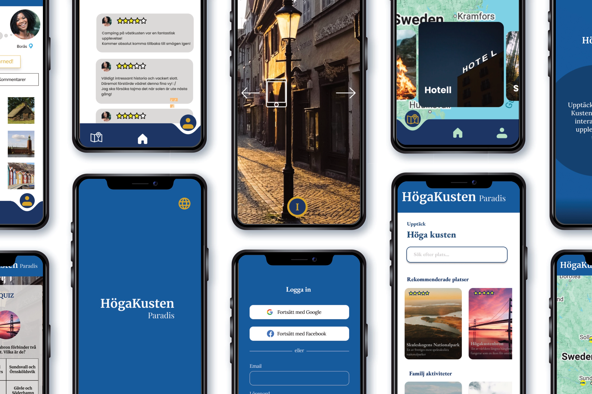
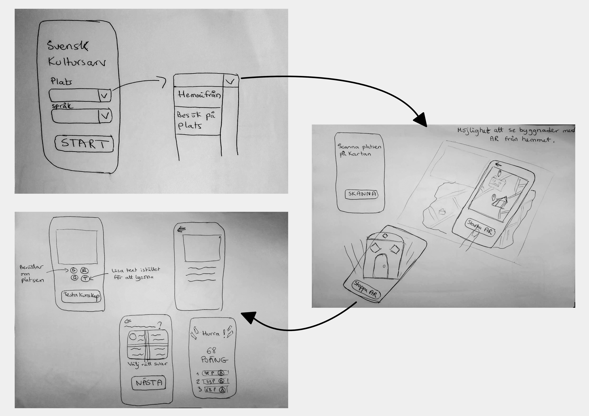
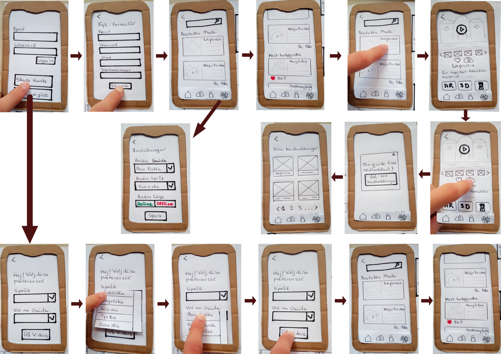
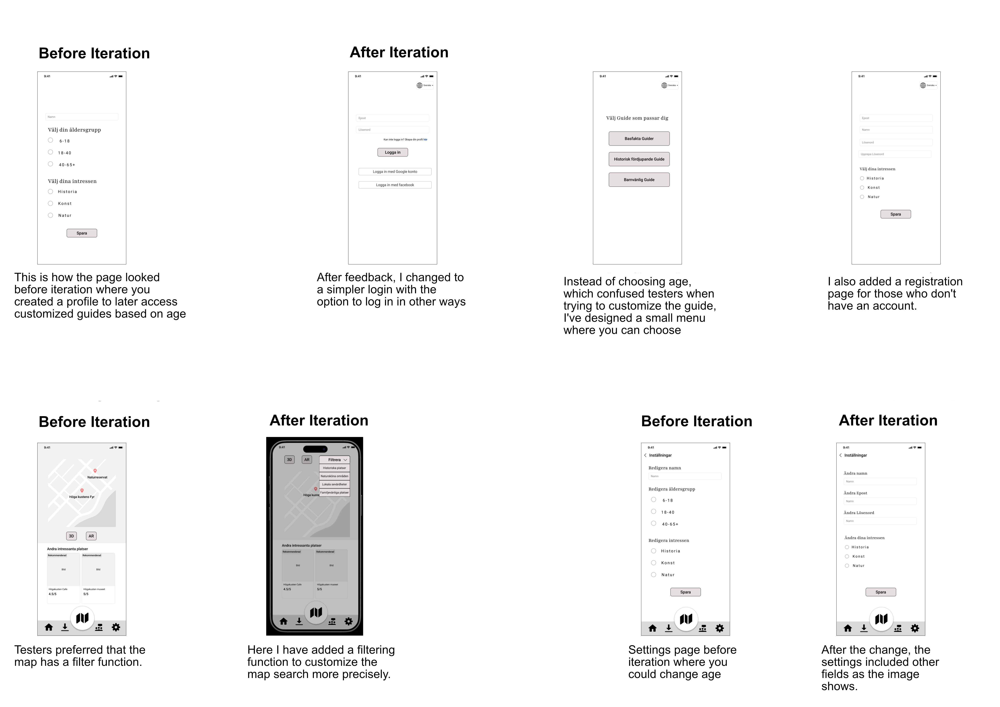

Höga Kusten: Implementing modern techniques to attract local Tourists
- Interview
- Surveys
- Pact analysis
- Environmental analysis
- Affinity diagramming
- Sketches
- Prototypes
- Mockups
- Testing
- Iterations
- Interaction map

Background and Goals
Höga Kusten is a popular destination, and the goal was to create an app that meets the needs of a broad audience, including those who value accessibility and ease of navigation.
- Overall Goal: To provide a rich experience of Höga Kusten.
- UX Goals: Improve accessibility and simplify navigation.
- Target Audience Needs: Accessibility, ease of navigation, customized guides, language options, gamification and include immersive technology.
My Role
In this project, I worked as a member in a team and we were responsible for:
- UX Design
- User Research
- Information Architecture
- Prototype Design (low-fidelity and high-fidelity)
- Usability Testing
- Evaluation using Benyon's 12 points
This project was a teamwork effort with 3 members collaborating to complete it.
Design Process
Filter Dimensions
Filter dimensions were used to focus development efforts on core features such as customized guides and language options to meet user needs for accessibility and easy navigation.
Prototype Development
The process included a divergent phase with sketches and mockups, followed by the development of low-fidelity prototypes to quickly test basic concepts.


Usability Testing and Iteration
Usability tests with the low-fidelity prototype identified issues with login and navigation. The feedback led to a redesign of the login flow and the implementation of clearer filters to facilitate guide searches.
Theories and Methods
Filter Dimensions prioritized core features like customized guides and language options for accessibility.
Prototyping involved sketches, low-fidelity, and high-fidelity prototypes to refine design concepts.
Usability Testing identified issues leading to iterative improvements, especially in login flow and navigation.
Evaluation used Benyon's 12 points to assess usability and overall effectiveness.
Design Solution
Flowchart

Key Improvements
Redesigned Login Flow
Based on usability testing, the login process was made more intuitive and accessible.
The implementation of clear filters helps users quickly find relevant guides based on their needs.

Results and Learnings
Prototype
Results
- Usability tests showed improved user-friendliness, aesthetics, and efficiency (according to Benyon's 12 points).
- Identified areas for improvement include customization options and clearer explanations of some features.
- The app is assessed to have the potential to attract users and offer a positive experience.
Learnings
Throughout the project, I learned the importance of early usability testing and iterative design. I also realized how crucial it is to continuously evaluate design decisions based on user needs and established UX principles.
Explore More
For a more in-depth look at the design process and additional materials, please visit my Padlet: